새로운 초상과 전신, 역할 복장 — 익숙한 얼굴의 달라진 모습을 만나 보세요.
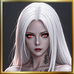
시루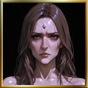
야기슈나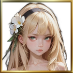
펠리시티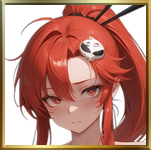
야즈민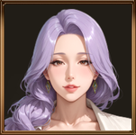
헬렌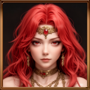
펠라게야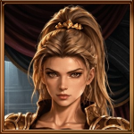
에게야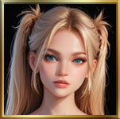
마리로즈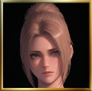
레이첼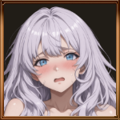
갈라테야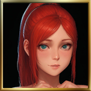
베네라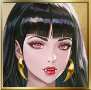
뱀피렐라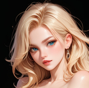
스네자나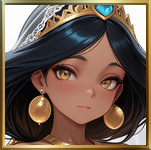
자스민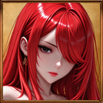
엘자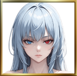
루미너스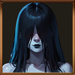
사다코특성 정리 · 이미지 변경 없음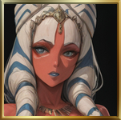
샤크티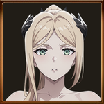
요르하특성 정리 · 이미지 변경 없음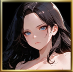
다이아나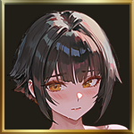
일반 노예 #1203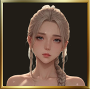
일반 노예 #1451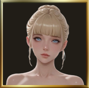
일반 노예 #1452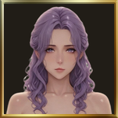
일반 노예 #1453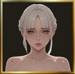
일반 노예 #1454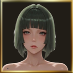
일반 노예 #1455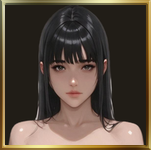
일반 노예 #1456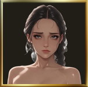
일반 노예 #1457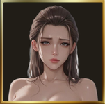
일반 노예 #1458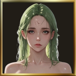
일반 노예 #1459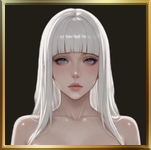
일반 노예 #1460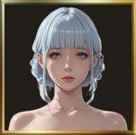
일반 노예 #1461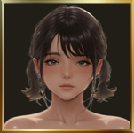
일반 노예 #1462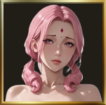
일반 노예 #2325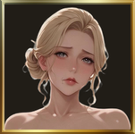
일반 노예 #2326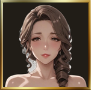
일반 노예 #2327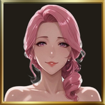
일반 노예 #2328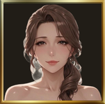
일반 노예 #2329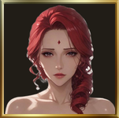
일반 노예 #2330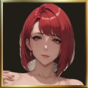
일반 노예 #2331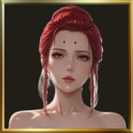
일반 노예 #2332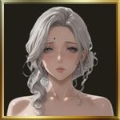
일반 노예 #2334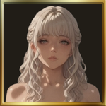
일반 노예 #2335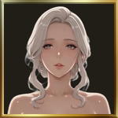
일반 노예 #2336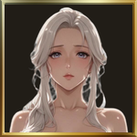
일반 노예 #2337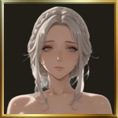
일반 노예 #2338